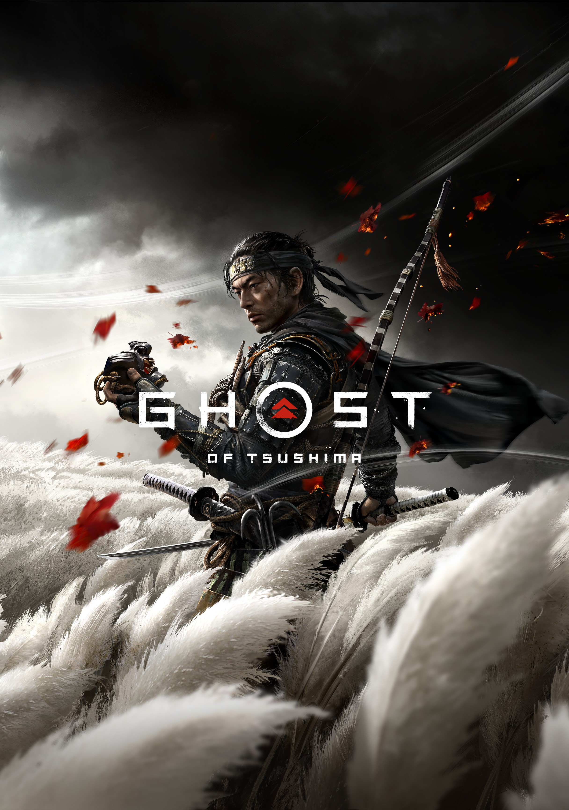

Primarily released for PS4 in July 17, 2020
.jpg)
Released for PS3 on May 26, 2009

Ghost of Tsushima developer company "Sucker Punch" have
officially announced their newest PlayStation 5 game, Ghost of
Yōtei. The PlayStation 5 exclusive will release in 2025.
In a PlayStation Blog post, the developers revealed that the upcoming title will build on the core pillars established in its predecessor, Ghost of Tsushima. The original game followed the journey of Jin Sakai as he embraced the role of the Ghost to defend Feudal Japan. The new game, Ghost of Yōtei, will expand on "the idea of the Ghost" by introducing a new protagonist, Atsu. While Sucker Punch has not shared detailed plot specifics, they confirmed that Atsu's story will unfold in 1603, over 300 years after the events of Ghost of Tsushima. The setting is the region around Mount Yōtei in Ezo (modern-day Hokkaido), a landscape characterized by vast grasslands, snowy tundras, and unexpected dangers. At the time, this area lay outside Japan's direct rule, adding a unique historical backdrop to the story.
Andrew Goldfarb, Senior Communications Manager at Sucker Punch, shared exciting details about the studio's first game built entirely for the PlayStation 5. “We’re thrilled to expand on the visual foundation established in Ghost of Tsushima and make the world feel even more immersive,” he wrote. The game will feature expansive sightlines that allow players to see far across the environment, skies filled with twinkling stars and auroras, and realistic wind effects on grass and vegetation. Goldfarb also hinted at additional improvements, including new gameplay mechanics, enhanced features, and an array of new weapons, promising a richer and more engaging experience in the studio's next adventure.